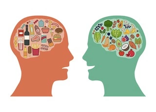
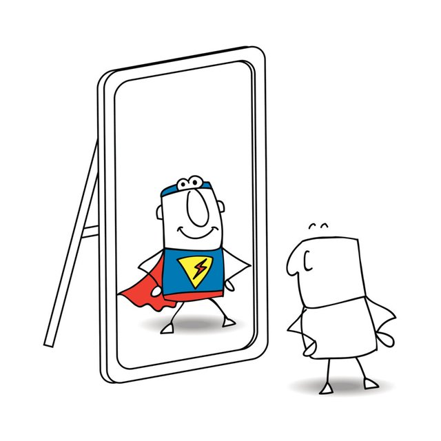
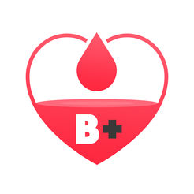
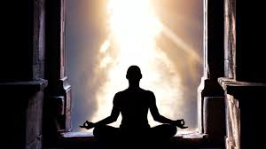

Tick Tock, Tick Tock (Time Management)
Are you a person who is always too busy where you don’t have time for anything?! Living in the UK comes with a fast paced life where time never waits for you & ultimately you can never keep up with it either. We can become so ‘busy’ in our lives, where we can lose focus on our priorities and fail to reflect on how much time we actually do have. How can we ever become a true Daas if we don’t even have the time to think & implement the necessities required to do so. Dedication, commitment, Love, Passion, Spirituality etc… all require time. Manage your time well and you will directly see the positive impact in this unique and durlabh life we have been blessed with.

Input = Output (Ahaar Vivek)
Focus, a short word with a big meaning and an even bigger result if done well. Ever wonder why you can’t focus even on the basics of life and Satsang? What distracts us or moves our mind and thoughts away from where we really need to go? Ultimately it is our intake. Scientifically and spiritually, it is proven that the food and drink we consume has a directly huge impact in the life you live. It is said, a bitter pill results in sweet results. Daasatva is powered by the soul, learn to control it, rather than let everything else control the soul. Learn to conquer your mind, truly awaken your senses and enlighten your soul by attending this roundtable.

Man in the Mirror (Self-Observation)
A successful business person always keeps their accounts up to date so they know how much profit or loss they are making. If they make a loss then they will do what it takes to rectify this. Do we have the same passion, retrospective & honesty in us to do the same for this Satsang? Being a Daas is all about seeing things in a whole new light, a Divine sight. Not only realise who you are and your improvements, but see the greatness in those around you and importantly have an approach to apply what you learn from these great souls. Register for this roundtable for all of this, plus much more.

Your Blood Type is B Positive (Positive Thinking)
It is human nature to think negative and see the worst in someone or something without knowing the full story. But Why?! What makes us live a life according to ‘human nature’, what does that even mean?! Negativity in mind, thought and action can lead to destruction on many fronts; however a positive mind has the power to elevate you amongst the greatest in the eyes of our Bhagwan. He absolutely loves a positive person like no other. Whilst negativity can result in mental, physical and spiritual downfall, possessing a positive outlook is central to developing characteristics of a true Daas. Come along and learn the art of being positive all as per the divine teachings of our Maharaj. For, He was the greatest example to all of us in positive thinking.
Mamas & Papas (Daasatva Towards Parents)
We look everywhere for greatness, for a force to push us forward, blessings to elevate us like no other, a simple means to attain this Bhagwan, yet all along the solution to all of this is right in front of us. Our Mama & Papa Single handily they possess all of this at their revered feet. It is all about seeing them in a different way to what we know them to be. The first step to climbing the Daasatva ladder is at home, with the raajipo and blessings of your parents. One of their hands on your head will open doors in your life like no other. If you’re looking to feel a feeling like no other in this Shibir, then do attend this Roundtable. Success starts with those who gave you birth, raised you up and made so many sacrifices, just so you can live the life that you want. Everything you have is down to them in one way, shape or form.
I am Something Nothing (Nirmaanipanu)
The Humble Selfless Servant. You can never be a Daas without putting your ego to one side. Humility comes from seeing those around you in a whole new lease of light and then realising how fortunate you are to be able to serve such divine souls. To bow down in front of others is a sign of doing true Satsang. Check into this humble roundtable to enlighten you on how to get rid of Mr Ego, the benefits of living a life without ego and as prescribed by Maharaj, the situations of when to have some ego. All the great souls of the past & present, control their ego in the palm of their hands. Nirmaanipanu breeds bonds with Bhagwan & His Santos and Bhaktos like nothing else can. The root foundation of being a Daas is forsaking the biggest enemy in our lives that is ego. When ego dies, the soul awakens.
The Greatest Shield (Sahan Shakti)
To withstand whatever life throws at you, keep your faith strong in Bhagwan strong and stand tall in the face of all adversity is a pathway to strong Daasatva. One thing is definite in this life and that is sukh & dukh, for such times tests our Daas Bhaav towards our Bhagwan. Just think for a moment of the souls around you now or in the past, who have lived through so much, yet like a mountain they tower over their life with so much strength. With Sahan (tolerance) Shakti comes Samjan (understanding) and with them both is the foundation to live a life of a servant. Attend this roundtable and open your eyes in being a immovable servant, who will stay under their Masters wish no matter what comes their way. A true solider will even die knowing they are serving in the right army and for the true reasons.

The Voice (Sharanagati)
For a minute think about the WHO? Instead of thinking what Bhagwan is asking for us to do or why He is asking for us to do it, first think WHO is asking me in the first place? Realise the greatness of this Bhagwan we have been easily gifted with and how we can value Him, only then will we start to actually live by the teachings of this Bhagwan. We know the value of money and our family, hence we do everything we can for it. We can easily become servants for the material world, but the everlasting happiness and true Daasatva comes when we fully surrender to our Bhagwan & His truest devotees. Let go of your own deh bhaav and be a true Daas in the shelter of this Bhagwan. Let God have your life, He can do far more with it than you can.